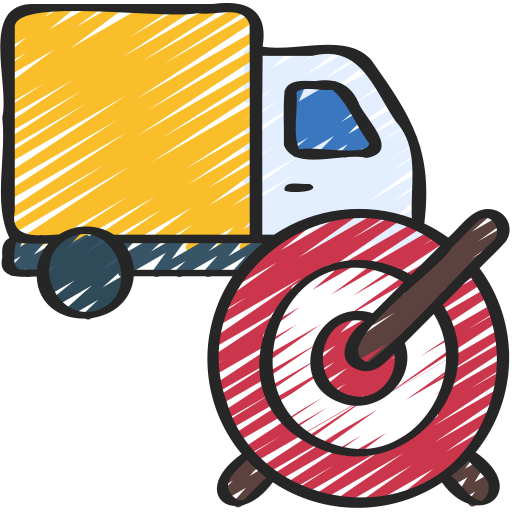

Dünyada Lojistiğin Geleceği 2024 ve Ötesi

Lojistik sektörü, küresel ekonominin bel kemiği olarak kabul edilir. Üretimden tüketime kadar olan süreçlerde kritik bir rol oynar ve dünya ekonomisinin işleyişini sağlar. 2024 yılından itibaren lojistik dünyasında önemli değişimlerin ve yeniliklerin kapıda olduğunu görüyoruz. Bu blog yazısında, lojistik sektörünün geleceğine dair öngörüleri, yeni trendleri ve sektörü şekillendiren faktörleri ele alacağız.

1. Dijital Dönüşüm ve Teknoloji Entegrasyonu
Lojistik sektörü, dijital dönüşümün getirdiği yeniliklerden büyük ölçüde faydalanmaktadır. Yapay zeka (AI), makine öğrenimi (ML), büyük veri analitiği ve Nesnelerin İnterneti (IoT) gibi teknolojiler, lojistik operasyonlarını daha verimli ve şeffaf hale getirmektedir.
Yapay Zeka ve Makine Öğrenimi: AI ve ML, talep tahmini, envanter yönetimi, rotalama ve teslimat sürelerinin optimize edilmesinde kullanılmaktadır. Örneğin, AI destekli tahminler sayesinde, şirketler talep artışlarını önceden tahmin ederek stok seviyelerini buna göre ayarlayabilmektedir.
Nesnelerin İnterneti (IoT): IoT cihazları, taşınan malların durumunu gerçek zamanlı olarak izlemek için kullanılmaktadır. Bu sayede, sıcaklık kontrolü gereken ürünlerin taşınması gibi hassas işlemler daha güvenli ve etkin bir şekilde gerçekleştirilmektedir.
Büyük Veri Analitiği: Büyük veri analitiği, lojistik operasyonlarının her aşamasında daha iyi kararlar alınmasını sağlamaktadır. Örneğin, geçmiş verilerin analizi ile daha etkili taşıma rotaları belirlenebilir ve operasyonel maliyetler düşürülebilir.
2. E-Ticaretin Yükselişi ve Hızlı Teslimat İhtiyacı
E-ticaret sektörü, lojistik sektörünün büyümesini tetikleyen en önemli faktörlerden biridir. Online alışverişin artması, lojistik hizmetlere olan talebi önemli ölçüde artırmaktadır.
Son Mil Lojistiği: E-ticaretin büyümesiyle birlikte, son mil lojistiği daha da önem kazanmıştır. Müşterilerin hızlı teslimat beklentileri, lojistik şirketlerini daha etkili ve hızlı teslimat çözümleri geliştirmeye yöneltmektedir. Drone ve otonom araçlar gibi yenilikçi teslimat yöntemleri, son mil lojistiğinde devrim yaratmaktadır.
Depo ve Envanter Yönetimi: E-ticaret siparişlerinin artması, depo ve envanter yönetimini daha karmaşık hale getirmektedir. Akıllı depolama sistemleri ve otomatik envanter izleme teknolojileri, bu süreçlerin daha verimli yönetilmesini sağlamaktadır.

3. Sürdürülebilirlik ve Yeşil Lojistik
Çevresel sürdürülebilirlik, günümüzde tüm sektörlerde olduğu gibi lojistik sektöründe de büyük bir önem taşımaktadır. Karbon ayak izini azaltma çabaları, yeşil lojistik uygulamalarını ve yenilikçi çözümleri beraberinde getirmektedir.
Elektrikli Araçlar ve Alternatif Yakıtlar: Fosil yakıtların çevresel etkilerini azaltmak amacıyla, lojistik şirketleri elektrikli araçlar ve biyoyakıtlar gibi alternatif yakıtlara yönelmektedir. Elektrikli kamyonlar ve teslimat araçları, karbon emisyonlarını azaltmak için etkili bir çözüm sunmaktadır.
Karbon Ayak İzi Hesaplama: Lojistik operasyonlarının çevresel etkisini ölçmek ve azaltmak amacıyla, karbon ayak izi hesaplama araçları yaygınlaşmaktadır. Şirketler, sürdürülebilir lojistik stratejileri geliştirerek çevre dostu uygulamalara yatırım yapmaktadır.
4. Küresel Tedarik Zinciri ve Jeopolitik Riskler
Küresel tedarik zincirleri, lojistik sektörünün en karmaşık ve kritik bileşenlerinden biridir. 2024 ve sonrasında, jeopolitik riskler ve küresel ticaret dinamikleri, tedarik zincirlerinin yönetiminde önemli rol oynayacaktır.
Jeopolitik Gerilimler: Ticaret savaşları, uluslararası anlaşmazlıklar ve politik belirsizlikler, tedarik zincirlerinde aksamalara neden olabilmektedir. Şirketler, bu tür riskleri yönetmek için esnek ve dayanıklı tedarik zinciri stratejileri geliştirmektedir.
Yerelleşme ve Çeşitlendirme: Tedarik zincirlerinin küresel ölçekteki karmaşıklığını azaltmak için, şirketler yerel kaynakları ve alternatif tedarikçileri kullanma yoluna gitmektedir. Bu strateji, tedarik zincirlerinin daha esnek ve dayanıklı olmasını sağlamaktadır.
5. İnovasyon ve Yeni İş Modelleri
Lojistik sektörü, inovasyon ve yeni iş modelleri ile sürekli olarak evrim geçirmektedir. Start-up'lar ve teknoloji odaklı şirketler, lojistik sektöründe yenilikçi çözümler ve iş modelleri geliştirmektedir.
Paylaşımlı Lojistik: Paylaşımlı ekonominin bir yansıması olarak, lojistik sektöründe de paylaşımlı lojistik çözümleri yaygınlaşmaktadır. Farklı şirketlerin lojistik kaynaklarını paylaşarak maliyetleri düşürdüğü ve verimliliği artırdığı bu model, sektörde önemli bir yenilik olarak öne çıkmaktadır.
Lojistik Teknoloji Start-up'ları: Teknoloji odaklı lojistik start-up'ları, sektördeki mevcut sorunlara yenilikçi çözümler sunmaktadır. Örneğin, blockchain teknolojisi ile tedarik zinciri güvenliği ve şeffaflığı artırılabilirken, yapay zeka destekli optimizasyon araçları operasyonel verimliliği artırmaktadır.